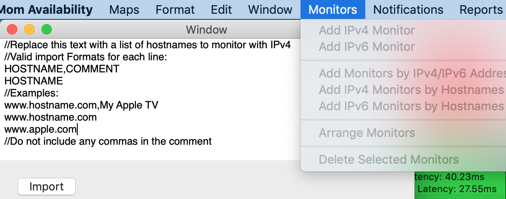

Adding multiple monitors by hostname
Highlight your desired map and then select Monitors -> Add IPv4 Monitors by Hostnames or Monitors -> Add IPv6 Monitors by Hostnames .

You can enter a list of proposed monitors in the following formats:
HOSTNAME
HOSTNAME, COMMENT
If a hostname has multiple IP addresses of the requested protocol, all of them will be added to monitoring.
Duplicate IPs (within a map) will not be added to monitoring.
https://networkmom.net feedback@networkmom.net Copyright 2019 Network Mom LLC